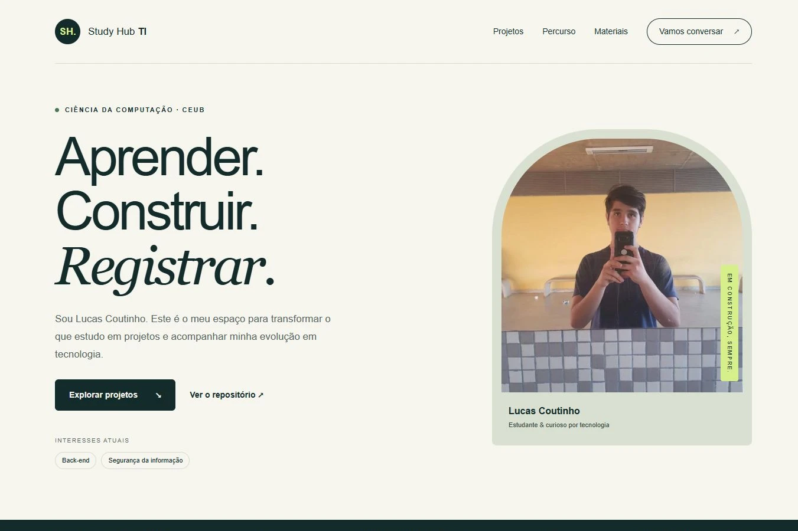
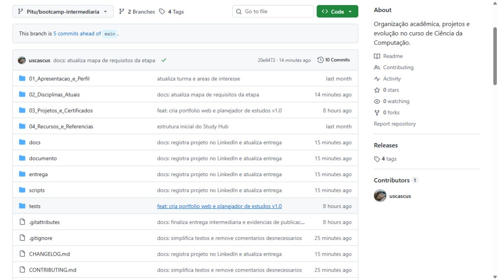
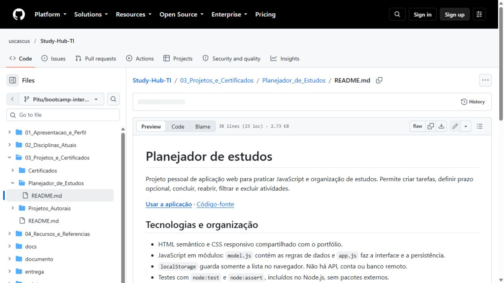
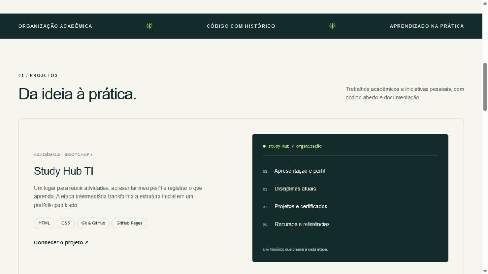
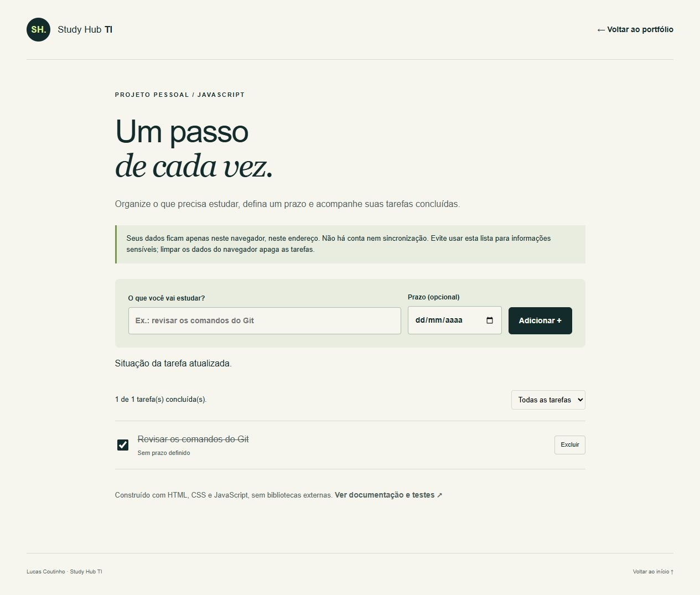
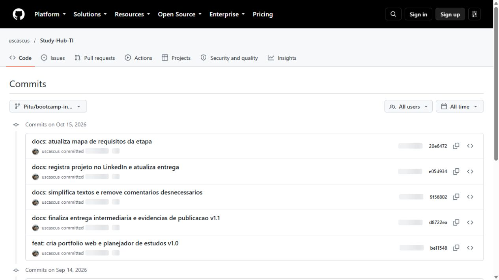
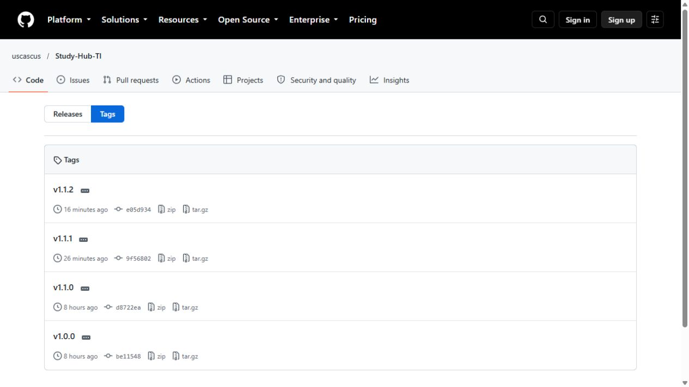
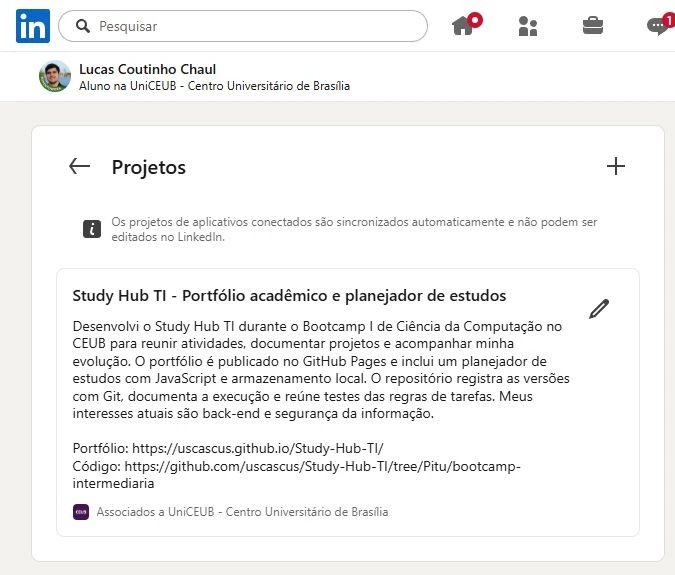

Bootcamp I / Guia de gravação
Cinco minutos.
Uma etapa de cada vez.
Lucas Coutinho · Ciência da Computação · CEUB
Abra as páginas pelos botões, confira o print e siga a fala indicada. Os links abrem em outra aba para você continuar com este roteiro à mão.
- Abra os links das seis etapas e deixe o LinkedIn conectado.
- Grave a tela do navegador com seu microfone. Faça um teste curto de som.
- Consulte este guia no celular ou em outra janela; mostre as páginas do projeto durante a fala.
- Ensaie com um cronômetro. Os tempos incluem sua fala e os cliques da demonstração.
Os prints são referências de onde navegar. No vídeo, abra as páginas e demonstre o planejador funcionando. Clique em qualquer print para ampliar.
0:00–0:40 · 40 segundos
Apresente o projeto

Mostrar
- Mostre o nome Study Hub TI, sua apresentação e os interesses em back-end e segurança da informação.
Olá, meu nome é Lucas Coutinho e curso Ciência da Computação no CEUB. Este é o Study Hub TI, meu espaço para organizar o que produzo durante o curso e transformar esse material em um portfólio. Meus interesses atuais são back-end e segurança da informação. Nesta etapa do Bootcamp I, a proposta foi ir além da organização de pastas: publicar uma página, desenvolver um projeto funcional e registrar as mudanças com Git. Vou mostrar a estrutura, os projetos e como o histórico ajuda a acompanhar essa evolução.
0:40–1:30 · 50 segundos
Mostre pastas e documentação


Mostrar
- Aponte as quatro pastas numeradas na raiz do repositório.
- Mostre também docs, documento, entrega e tests.
- Troque para o README ao começar a explicar a documentação de cada projeto.
O repositório tem quatro áreas principais. A primeira apresenta meu perfil. A segunda separa as disciplinas e suas atividades; no Bootcamp I está a documentação do portfólio web. A terceira reúne projetos pessoais, como o planejador de estudos. A quarta guarda referências utilizadas. Também existem pastas para os documentos editáveis, os PDFs e os testes. A pasta docs contém os arquivos publicados no GitHub Pages.
Ao abrir o READMECada projeto tem um README que explica o objetivo, as tecnologias, como executar e quais são os limites. Essa organização ajuda tanto na revisão das matérias quanto na apresentação do trabalho para outras pessoas.
1:30–2:20 · 50 segundos
Navegue pelo portfólio

Mostrar
- Mostre os dois projetos: portfólio e planejador.
- Role até o percurso de desenvolvimento.
- Mostre os links dos PDFs em Materiais e os contatos no final.
A página inicial apresenta meu perfil e permite conhecer os projetos sem precisar entender a estrutura do GitHub. Ela foi construída com HTML e CSS, sem depender de bibliotecas externas. A navegação leva aos projetos, ao percurso de desenvolvimento, aos materiais e aos contatos. Os PDFs da etapa inicial e da intermediária ficam disponíveis na própria página. Também há uma apresentação com roteiro. A publicação usa a pasta docs da branch da etapa intermediária. Os caminhos relativos fazem os recursos funcionarem no endereço do projeto, e o layout se reorganiza em telas menores. A página principal continua acessível mesmo sem JavaScript.
2:20–3:25 · 1 minuto e 5 segundos
Demonstre o planejador

Fazer e falar, nesta ordem
- Adicionar: digite “Revisar os comandos do Git” e clique em Adicionar +. O prazo é opcional.
O planejador permite registrar uma tarefa de estudo e definir um prazo, se eu precisar.
- Concluir: marque o círculo ao lado da tarefa.
Ao terminar a atividade, marco a tarefa como concluída.
- Filtrar: escolha Pendentes, depois Concluídas.
Os filtros separam o que ainda preciso fazer do que já foi concluído.
- Recarregar: atualize a página pelo botão do navegador.
A tarefa continua salva depois de recarregar, porque os dados ficam no armazenamento local do navegador.
- Encerrar: volte para Todas as tarefas.
Não há conta nem sincronização entre dispositivos. Se eu limpar os dados do navegador, perco a lista. Neste projeto, pratiquei JavaScript, eventos, validação de dados e testes das regras das tarefas.
3:25–4:20 · 55 segundos
Explique o histórico de versões


Mostrar
- Aponte duas mensagens do histórico e o nome da branch.
- Troque para Tags ao explicar como as versões são identificadas.
- Comente os testes e o guia de contribuição, sem precisar abrir outras abas.
O Git registra as mudanças em commits com objetivos específicos. A primeira versão web fica identificada pela tag 1.0.0, e a evolução dos materiais pela versão 1.1.0. O trabalho acontece em uma branch própria, mantendo a etapa inicial na main.
Depois, comente os testesOs testes verificam inclusão, conclusão, filtros, exclusão, datas e recuperação de dados. Além deles, é preciso conferir o uso real no navegador. O guia de contribuição explica como abrir uma issue, propor uma alteração e pedir revisão por pull request. O histórico e o changelog permitem acompanhar o que mudou entre as versões.
4:20–5:00 · 40 segundos
Mostre o LinkedIn e encerre

Mostrar
- Mostre o título do projeto, a associação ao UniCEUB e os endereços do portfólio e do código.
Adicionei o Study Hub à seção Projetos do meu LinkedIn, com a descrição do trabalho e os endereços do portfólio e do código. O site também leva ao meu perfil profissional. Nesta etapa pratiquei organização de repositórios, documentação, desenvolvimento web e versionamento. Quero continuar adicionando os trabalhos do curso e aprofundar meus estudos em back-end e segurança da informação. Também pretendo melhorar o planejador, começando pela edição de tarefas e pela exportação da lista. Obrigado por acompanhar a apresentação do Study Hub TI.
Terminou? Pare a gravação, confira o áudio e salve o arquivo. Se errar uma frase, faça uma pausa e repita; o trecho pode ser cortado na edição.
Voltar ao início do guia ↑